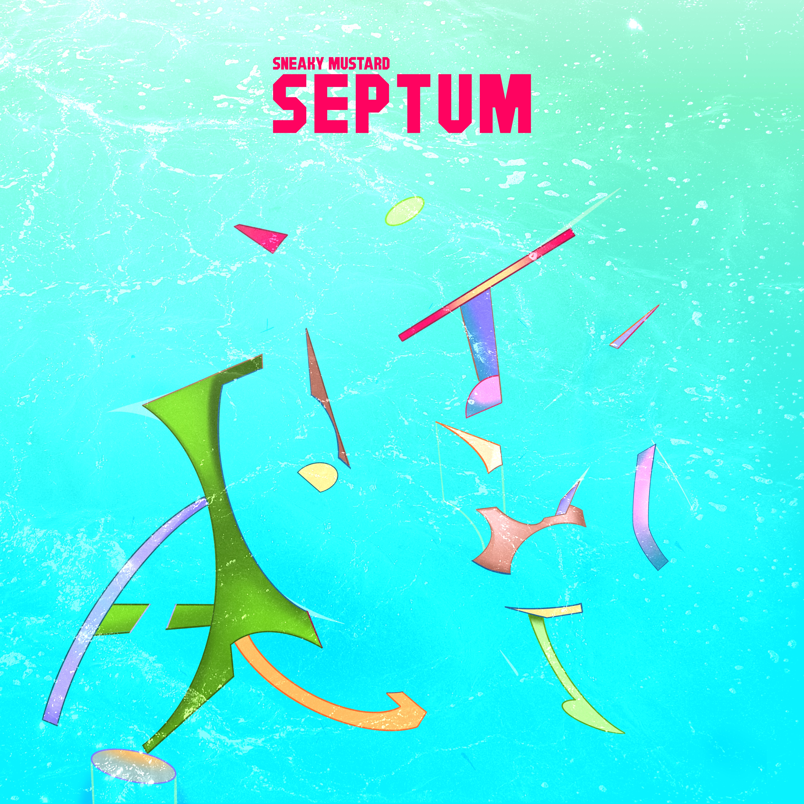

Sneaky Mustard blend heavy, syncopated riffs with catchy choruses and pop-hook inspired guitar melodies
Sneaky Mustard
The Challenge
Sneaky mustard is a four-member heavy rock band from Greece that needed to refresh their visual image to align with their new musical direction. Their goal was to reintroduce themselves to their fan base as well as reach to new audience.
The Solution
My role on this project was to refresh their visual identity to better reflect their new record’s turn towards pop. The goals of this project were to design and illustrate their album art and digital singles, produce motion graphics to enhance music experience on music platforms, and design tickets for an upcoming live show.
